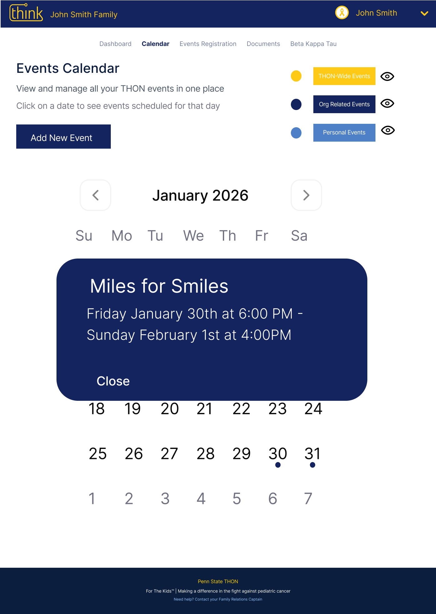

Selected Work
Each project focuses on a different kind of complexity: AI explainability, stakeholder workflows, and support systems for older adults.

Arbiter
Made an AI-powered job matching tool easier to understand, refine, and act on for early-career users.
- Clarified how users steer the AI.
- Reduced ambiguity around career level and next steps.

THON Family Portal
Turned an administrative family portal into a clearer, action-oriented tool for THON families.
- Reframed the calendar around upcoming family actions.
- Separated important event details from dashboard noise.

SupportMe
Designed a senior-centered support platform for peer communities, mutual aid, and safer requests.
- Built around dignity, privacy, and trust.
- Synthesized needs from aging, access, and care research.
From the Blog
I'm writing weekly about healthcare UX, one product at a time.
New posts break down real healthcare interfaces, what works, what doesn't, and how I'd redesign the parts that fall short.
Read the Blog